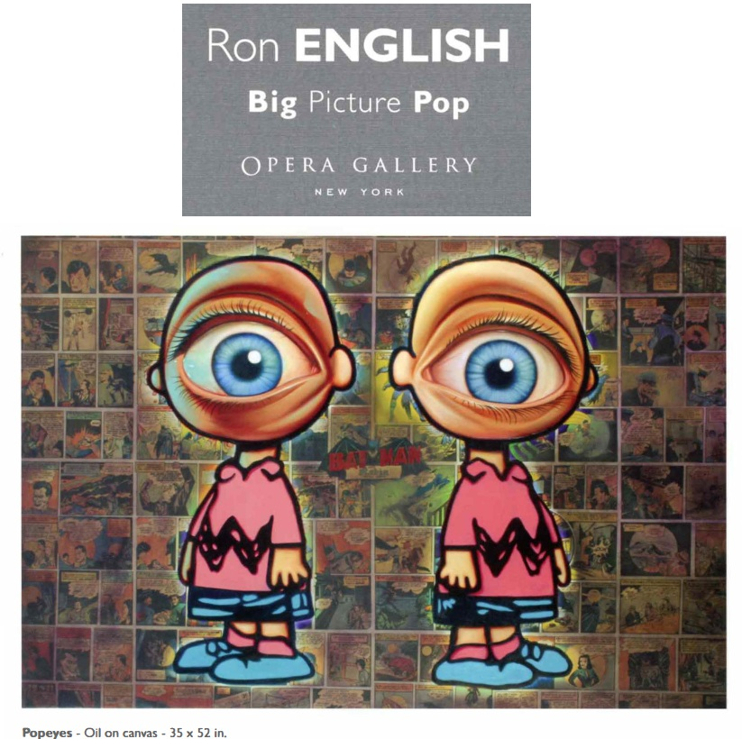
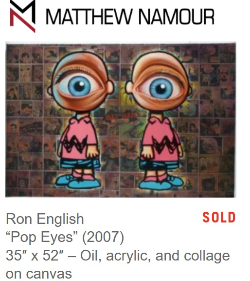
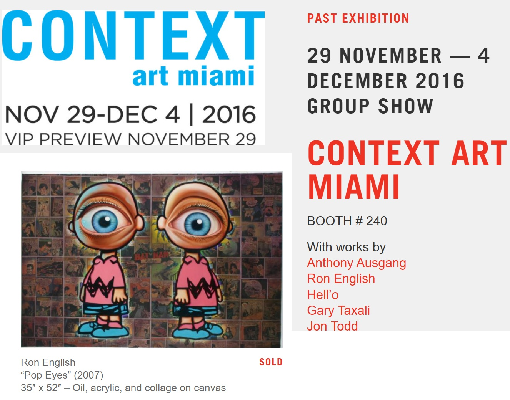

Exhibitions
Big Picture Pop, Opera Gallery, New York, New York, US, November 29–late December 2007.
Context Art Miami, Galerie Matthew Namour, Booth 240, Miami, Florida, US, November 29–December 4, 2016.
Literature
Ron English & Morgan Spurlock, Abject Expressionism: The Art of Ron English (San Francisco: Last Gasp, 2007), p. 152. ISBN 978-0867196894.
Opera Gallery, Big Picture Pop (New York: Opera Gallery, 2007), exhibition catalogue.
Notes
This work references Charlie Brown, the central character from Charles M. Schulz’s Peanuts.
Matthew Namour Gallery documents this work under the title Pop Eyes.
Ancillary Documentation



